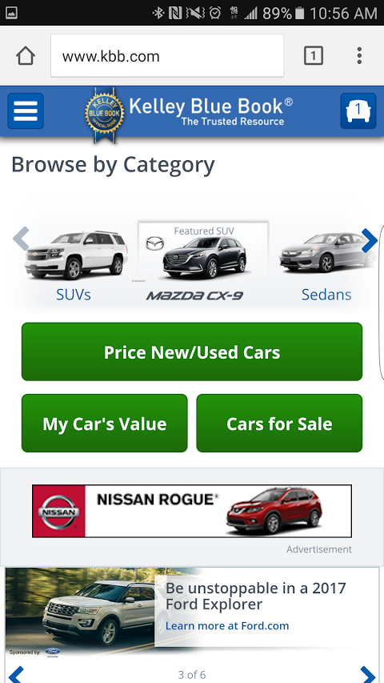

KeanWVegas.github.io
Target Audience
 Imgur
Completed Design Principles Compilation
Imgur
Completed Design Principles Compilation
Contrast
1. They knew exactly who their target audience was, and caters to them via personalized ads and jokes from the creators about recent subjects on the home page.
2. They met every need for the audience as an image-hosting website.
3. The organization was rather impeccable, and it allowed for a laid-back feeling of easy use.
4. The site completely facilitated visitors on mobile devices. Every function worked perfectly to the touch, and felt nearly app-like, even without having to download an app.
When first visiting Imgur.com on a mobile, you come to a black background with contrasting gray colors to label the toolbars against the hosted pictures.
The website is highly optimized for mobile use, and allows for quick movement through the different pictures and pages.
By pressing on the 3 bars on the top left it has a drop down menu that allows you to go to the home, search the site, sign in, register an account, give feedback, apply for a job, and access their Imgur store. It is also where they list their footer containing their ToS, desktop view and to open the app.
Persona

| Job: | Computer Programmer | Environment: | Dimly-lit basement | Browsing Habits: | Averages 1-2 hours daily | Nerdiness Level: | Too dang high | Reason for visit: | Dank Memes |
|---|
Worst website reviewed
Kelley Blue Book
There were too many things wrong with this website to list.
First, I guess, is that there were at least 12 different broken links.
The next would definitely be that when you press that back button, it brings you back to the homepage, even if you're just trying to move back one.
Huge, un-closable ads get in the way of your objective, and make it rather irritating to deal with.
Trying to navigate away from the menu without clicking on something in the menu is also not possible.